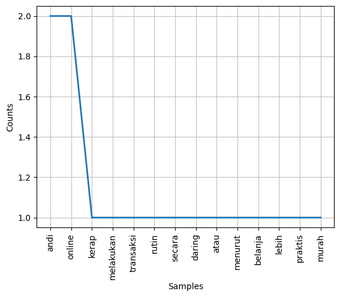

Tugas 1#
Nama : Oktaveian Aliansyah#
NIM : 220411100099#
Lowercase#
kalimat = "Berikut ini adalah 5 negara dengan pendidikan terbaik di dunia adalah Korea Selatan, Jepang, Singapura, Hong Kong, dan Finlandia."
lower_case = kalimat.lower()
print(lower_case)
berikut ini adalah 5 negara dengan pendidikan terbaik di dunia adalah korea selatan, jepang, singapura, hong kong, dan finlandia.
Remove number#
import re
kalimat = "Berikut ini adalah 5 negara dengan pendidikan terbaik di dunia adalah Korea Selatan, Jepang, Singapura, Hong Kong, dan Finlandia."
hasil = re.sub(r"\d+", "", kalimat)
print(hasil)
Berikut ini adalah negara dengan pendidikan terbaik di dunia adalah Korea Selatan, Jepang, Singapura, Hong Kong, dan Finlandia.
Removing white space#
kalimat = " \t ini kalimat contoh\t "
hasil = kalimat.strip()
print(hasil)
ini kalimat contoh
Separating Sentences with Split () Method#
kalimat = "rumah idaman adalah rumah yang bersih"
pisah = kalimat.split()
print(pisah)
['rumah', 'idaman', 'adalah', 'rumah', 'yang', 'bersih']
Tokenizing: Word Tokenizing Using NLTK Module#
import nltk
from nltk.tokenize import word_tokenize
kalimat = "Andi kerap melakukan transaksi rutin secara daring atau online."
tokens = nltk.tokenize.word_tokenize(kalimat)
print(tokens)
['Andi', 'kerap', 'melakukan', 'transaksi', 'rutin', 'secara', 'daring', 'atau', 'online', '.']
Tokenizing with Case Folding#
from nltk.tokenize import word_tokenize
import string
kalimat = "Andi kerap melakukan transaksi rutin secara daring atau online."
kalimat = kalimat.translate(str.maketrans('','',string.punctuation)).lower()
tokens = nltk.tokenize.word_tokenize(kalimat)
print(tokens)
['andi', 'kerap', 'melakukan', 'transaksi', 'rutin', 'secara', 'daring', 'atau', 'online']
Frequency Distribution#
from nltk.tokenize import word_tokenize
from nltk.probability import FreqDist
kalimat = "Andi kerap melakukan transaksi rutin secara daring atau online. Menurut Andi belanja online lebih praktis & murah."
kalimat = kalimat.translate(str.maketrans('','',string.punctuation)).lower()
tokens = nltk.tokenize.word_tokenize(kalimat)
kemunculan = nltk.FreqDist(tokens)
print(kemunculan.most_common())
[('andi', 2), ('online', 2), ('kerap', 1), ('melakukan', 1), ('transaksi', 1), ('rutin', 1), ('secara', 1), ('daring', 1), ('atau', 1), ('menurut', 1), ('belanja', 1), ('lebih', 1), ('praktis', 1), ('murah', 1)]
Frequency Distribution Visualization with Matplotlib#
import matplotlib.pyplot as plt
kemunculan.plot(30,cumulative=False)
plt.show()

Tokenizing: Sentences Tokenizing Using NLTK Module#
from nltk.tokenize import sent_tokenize
kalimat = "Andi kerap melakukan transaksi rutin secara daring atau online. Menurut Andi belanja online lebih praktis & murah."
tokens = nltk.tokenize.sent_tokenize(kalimat)
print(tokens)
['Andi kerap melakukan transaksi rutin secara daring atau online.', 'Menurut Andi belanja online lebih praktis & murah.']
Filtering using NLTK#
from nltk.tokenize import sent_tokenize, word_tokenize
from nltk.corpus import stopwords
kalimat = "Andi kerap melakukan transaksi rutin secara daring atau online. Menurut Andi belanja online lebih praktis & murah."
kalimat = kalimat.translate(str.maketrans('','',string.punctuation)).lower()
tokens = word_tokenize(kalimat)
listStopword = set(stopwords.words('indonesian'))
removed = []
for t in tokens:
if t not in listStopword:
removed.append(t)
print(removed)
['andi', 'kerap', 'transaksi', 'rutin', 'daring', 'online', 'andi', 'belanja', 'online', 'praktis', 'murah']
Filtering using Sastrawi: Stopword List#
from Sastrawi.StopWordRemover.StopWordRemoverFactory import StopWordRemoverFactory
factory = StopWordRemoverFactory()
stopwords = factory.get_stop_words()
print(stopwords)
['yang', 'untuk', 'pada', 'ke', 'para', 'namun', 'menurut', 'antara', 'dia', 'dua', 'ia', 'seperti', 'jika', 'jika', 'sehingga', 'kembali', 'dan', 'tidak', 'ini', 'karena', 'kepada', 'oleh', 'saat', 'harus', 'sementara', 'setelah', 'belum', 'kami', 'sekitar', 'bagi', 'serta', 'di', 'dari', 'telah', 'sebagai', 'masih', 'hal', 'ketika', 'adalah', 'itu', 'dalam', 'bisa', 'bahwa', 'atau', 'hanya', 'kita', 'dengan', 'akan', 'juga', 'ada', 'mereka', 'sudah', 'saya', 'terhadap', 'secara', 'agar', 'lain', 'anda', 'begitu', 'mengapa', 'kenapa', 'yaitu', 'yakni', 'daripada', 'itulah', 'lagi', 'maka', 'tentang', 'demi', 'dimana', 'kemana', 'pula', 'sambil', 'sebelum', 'sesudah', 'supaya', 'guna', 'kah', 'pun', 'sampai', 'sedangkan', 'selagi', 'sementara', 'tetapi', 'apakah', 'kecuali', 'sebab', 'selain', 'seolah', 'seraya', 'seterusnya', 'tanpa', 'agak', 'boleh', 'dapat', 'dsb', 'dst', 'dll', 'dahulu', 'dulunya', 'anu', 'demikian', 'tapi', 'ingin', 'juga', 'nggak', 'mari', 'nanti', 'melainkan', 'oh', 'ok', 'seharusnya', 'sebetulnya', 'setiap', 'setidaknya', 'sesuatu', 'pasti', 'saja', 'toh', 'ya', 'walau', 'tolong', 'tentu', 'amat', 'apalagi', 'bagaimanapun']
Filtering using Sastrawi#
from Sastrawi.StopWordRemover.StopWordRemoverFactory import StopWordRemoverFactory
from nltk.tokenize import word_tokenize
factory = StopWordRemoverFactory()
stopword = factory.create_stop_word_remover()
kalimat = "Andi kerap melakukan transaksi rutin secara daring atau online. Menurut Andi belanja online lebih praktis & murah."
kalimat = kalimat.translate(str.maketrans('','',string.punctuation)).lower()
stop = stopword.remove(kalimat)
tokens = nltk.tokenize.word_tokenize(stop)
print(tokens)
['andi', 'kerap', 'melakukan', 'transaksi', 'rutin', 'daring', 'online', 'andi', 'belanja', 'online', 'lebih', 'praktis', 'murah']
Add Custom Stopword#
from Sastrawi.StopWordRemover.StopWordRemoverFactory import StopWordRemoverFactory, StopWordRemover, ArrayDictionary
from nltk.tokenize import word_tokenize
# ambil stopword bawaan
stop_factory = StopWordRemoverFactory().get_stop_words()
more_stopword = ['daring', 'online']
kalimat = "Andi kerap melakukan transaksi rutin secara daring atau online. Menurut Andi belanja online lebih praktis & murah."
kalimat = kalimat.translate(str.maketrans('','',string.punctuation)).lower()
# menggabungkan stopword
data = stop_factory + more_stopword
dictionary = ArrayDictionary(data)
str = StopWordRemover(dictionary)
tokens = nltk.tokenize.word_tokenize(str.remove(kalimat))
print(tokens)
['andi', 'kerap', 'melakukan', 'transaksi', 'rutin', 'daring', 'andi', 'belanja', 'online', 'lebih', 'praktis', 'murah']
Stemming : Porter Stemming Algorithm using NLTK#
from nltk.stem import PorterStemmer
ps = PorterStemmer()
kata = ["program", "programs", "programer", "programing", "programers"]
for k in kata:
print(k, " : ", ps.stem(k))
program : program
programs : program
programer : program
programing : program
programers : program
Stemming Bahasa Indonesia using Sastrawi#
from Sastrawi.Stemmer.StemmerFactory import StemmerFactory
factory = StemmerFactory()
stemmer = factory.create_stemmer()
kalimat = "Andi kerap melakukan transaksi rutin secara daring atau online. Menurut Andi belanja online lebih praktis & murah."
hasil = stemmer.stem(kalimat)
print(hasil)
andi kerap laku transaksi rutin cara daring atau online turut andi belanja online lebih praktis murah